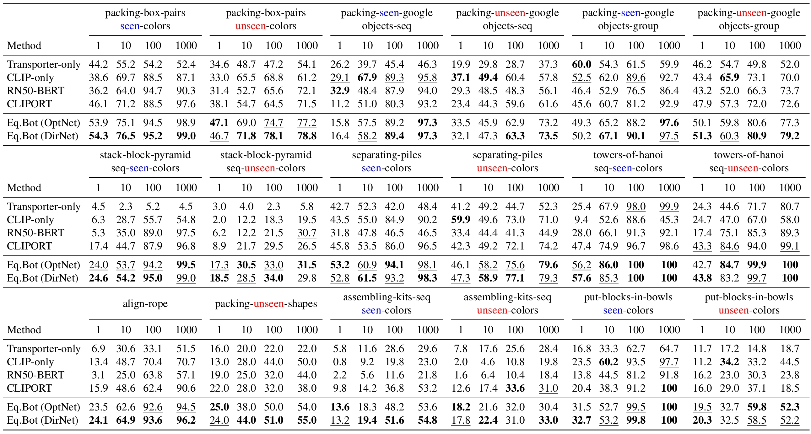
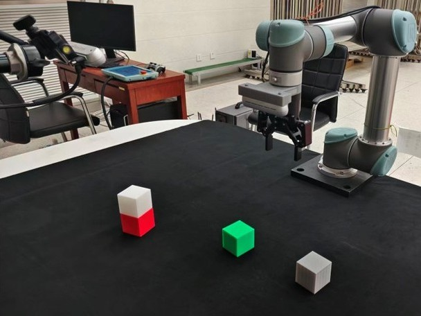
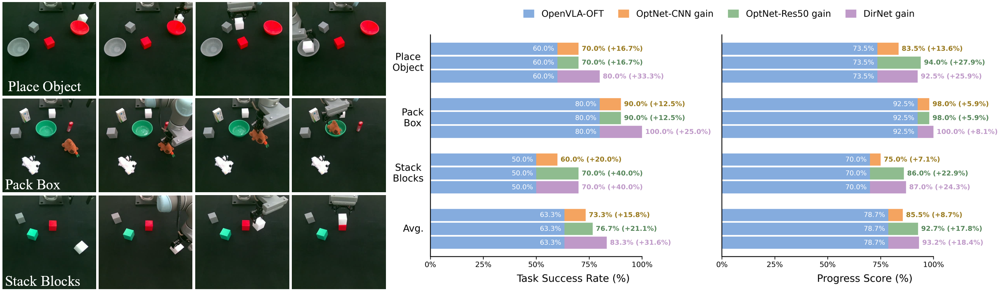

DirNet
Group-equivariant features encode candidate orientations in separate channels. Pooling over the spatial and feature dimensions yields a score for each candidate directly from the observation.
Robot learning · Geometric equivariance
Anonymous submission
Robotic manipulation is shifting from task-specific learning towards general-purpose vision-language-action (VLA) models. Despite their strong semantic generalization, these models remain sensitive to geometric transformations such as rotations. Existing approaches introduce equivariance through specialized architectures or symmetrization, often requiring network modifications or repeated policy evaluations. Meanwhile, heterogeneous action representations across VLA architectures further complicate maintaining geometric consistency.
Inspired by human spatial reasoning, we propose Eq.Bot, a model-agnostic canonicalization framework grounded in group equivariance for geometrically consistent robotic manipulation. Eq.Bot aligns observations to a learned canonical frame, evaluates the base policy once, and recovers actions in the original coordinates through representation-specific mappings, preserving the policy's internal architecture.
Experiments across four simulation benchmarks and three real-world tasks demonstrate improved manipulation performance across CNN- and Transformer-based policies of different scales while introducing modest inference overhead.

Eq.Bot uses one learned frame to couple observation canonicalization with action recovery. The inverse frame transform aligns the observation before prediction, while the forward transform recovers the predicted action in the original coordinates. Only the selected view is passed to the base policy, so its architecture, language input, and native action interface are preserved.

Estimate a transform from the canonical frame to the original frame. Apply its inverse to the observation to obtain the canonical view.
Run the base policy once on the selected view. Its architecture, language instruction, and action representation remain unchanged.
Use the estimated frame to transform spatial affordances, Cartesian poses or increments, or bimanual joint targets. Each mapping respects the base policy’s action representation.
Group-equivariant features encode candidate orientations in separate channels. Pooling over the spatial and feature dimensions yields a score for each candidate directly from the observation.
A conventional encoder extracts features from each rotated view. Cosine similarity to a learned reference vector selects the canonical view, and task supervision shapes the reference.
The canonicalizer learns jointly with the trainable policy components under task supervision. The main experiments use planar quarter turns (C4). With the instruction held fixed, the composite policy is equivariant when frame estimates transform consistently and the observation and action mappings are compatible on the valid domain.
We compare Eq.Bot with the corresponding base policies across four simulation benchmarks. Ravens tests spatial manipulation under different demonstration budgets; LIBERO covers four manipulation suites, VLABench tests generalization across five tracks, and RoboTwin 2.0 evaluates bimanual manipulation under Clean and Randomized conditions. Select a figure to view the full comparison.

Ravens. With 100 demonstrations, OptNet and DirNet raise CLIPORT’s completion score on align-rope from 62.4% to 92.6% and 93.6%. With just 10 demonstrations on packing-unseen-shapes, completion rises from 28.0% to 38.0% and 44.0%. These gains span both precise spatial manipulation and generalization to unseen object shapes.

LIBERO. Both variants improve OpenVLA-OFT across all four suites, raising mean success from 96.5% to 97.5% with OptNet and 97.7% with DirNet. The largest gains occur on Spatial, where success reaches 97.9% and 98.1%, respectively.
VLABench. OptNet and DirNet improve intention and progress scores over π0.5 on all five tracks. DirNet raises the mean scores from 61.0% and 42.4% to 67.1% and 46.1%. It also exceeds ACoT-VLA on in-distribution intention and progress and on Instruction intention, although ACoT-VLA remains stronger on Texture and Instruction progress.
RoboTwin 2.0. Across 50 bimanual tasks, mean success rises from 87.55% with TurboVLA to 89.88% with OptNet and 90.96% with DirNet. Both variants gain more in the Randomized setting than in Clean, suggesting that canonicalization helps under environmental variation.
We evaluate three UR5e tasks with different geometric demands: Place Object tests relative spatial relationships, Pack Box tests target selection among multiple objects, and Stack Blocks requires precise alignment and stable placement.
OpenVLA-OFT and all three Eq.Bot variants use the same demonstrations and are evaluated over 10 trials per task. Full success requires reaching the goal without hitting non-target objects. Progress scores capture intermediate milestones, such as aligning the gripper, securing the object, and completing placement.


| Metric | OpenVLA-OFT | OptNet-CNN | OptNet-Res50 | DirNet |
|---|---|---|---|---|
| Collision-free success | 63.3 | 73.3 | 76.7 | 83.3 |
| Progress score | 78.7 | 85.5 | 92.7 | 93.2 |
All three variants improve both metrics on every task. DirNet raises mean collision-free success from 63.3% to 83.3% and mean progress from 78.7% to 93.2%. On Stack Blocks, where reliable placement requires the most precise alignment, OptNet-Res50 and DirNet both raise collision-free success from 50.0% to 70.0%, while progress increases from 70.0% to 86.0% and 87.0%, respectively.
Select a task and trial number to compare OpenVLA-OFT, OptNet-CNN, OptNet-Res50, and DirNet at the same trial index. All 120 recordings are available, including successful and unsuccessful runs, so individual outcomes can be viewed alongside the aggregate scores.